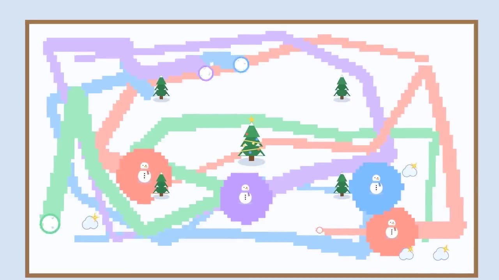
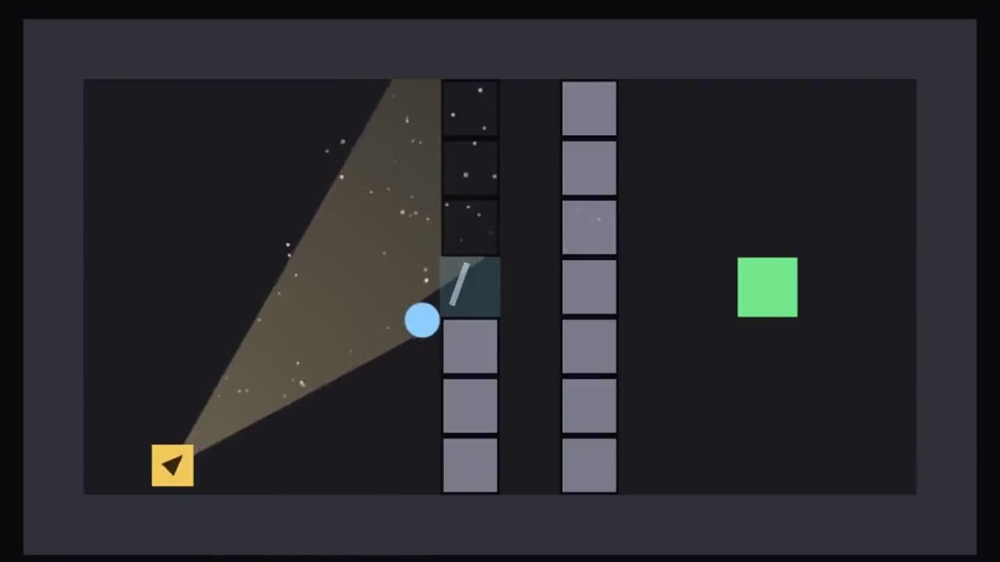

I build what I want to play, then play it until I can say what's wrong with it.
That second part is the job. Below: a card game I have run, broken and rewritten for ten years, and the smaller games I made while learning how to do it — 6 of them playable right here in the browser.
Flagship
Own IP · since 2016Astery Gate
Four players, one shared deck of 108. When you take damage, you choose whether it lands on your own life or the team's — and taking it pays you resources.
We played that rule for ten years. It was in neither edition of the rulebook.
Read the case →Games
Hover to watch · click to read and play
Weekly prototypes
One week eachMade one a week for a Unity course. The only brief I gave myself: make a game I hadn't played.
-
04
Nocturne
Weekly prototype · Narrative · Unity · 2026 A room, a locked cabinet, and three ways for the night to end.
-
05
SnowTurf
Weekly prototype · 2D · Unity · 2026 Four snowballs, one field. Fresh snow makes you bigger; bigger makes you slower.
-
06
Lumen
Weekly prototype · 2D · Unity · 2026 Light dissolves walls — but your own shadow keeps them shut.
-
07
Lodestar
Weekly prototype · 3D · Unity · 2026 You never touch the ball. You throw a star, and it follows.
-
08
DigFlow
Weekly prototype · 2D · Unity · 2026 Dig the channel. The flood follows it.
Credits
Other people's gamesWhere the work was judging play rather than authoring it.
- 2026GLO — Game as Live Ops, Juice PodDesigner · Unreal
Played the inherited build, named every place where the feel fell short, and broke those findings into tasks for the pod. Built the click feedback myself.
- ProHonor of Kings — BTK (Blood Thirsty Kings)Support · pro player
Plays support as Saika on a professional roster, international server — one of few women playing at that level.
- 2020VR bartender arcade — undergraduate capstoneProducer
Half a year, 3D, VR, arcade-cabinet form.
About
Short versionThe part I am good at is the part nobody wants: turning a game that only works when its designer is in the room into something somebody else can build.
I am finishing my degree at USC Games, where I am producer and designer on a four-person team. I write the rules, keep the card data honest and run the playtests.
My own games are 2D because of how 2D reads, not because of what I can build — my undergraduate capstone was a VR game in 3D. I also play support professionally in Honor of Kings, for BTK.